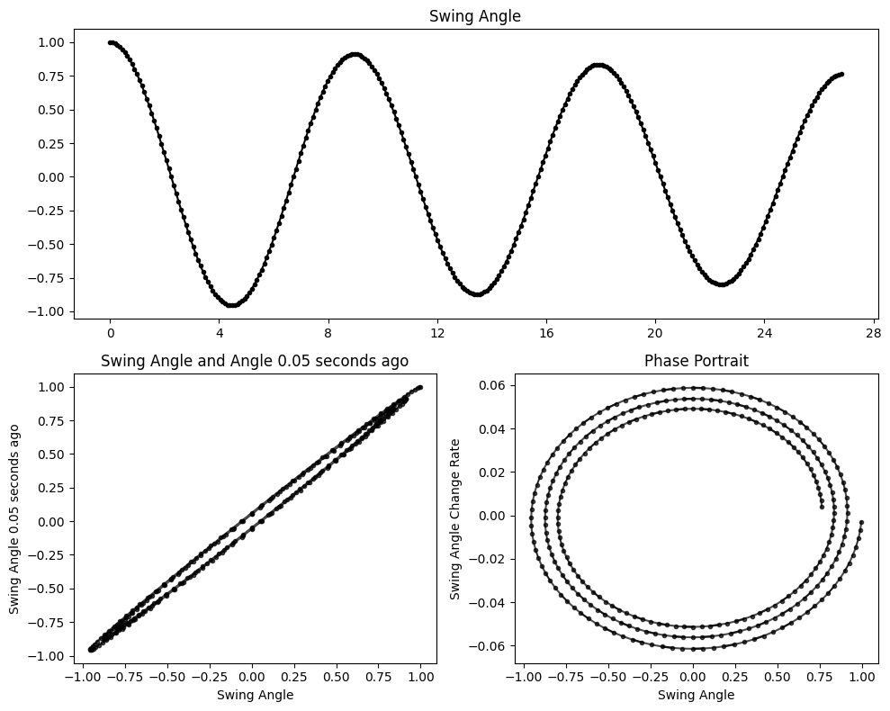
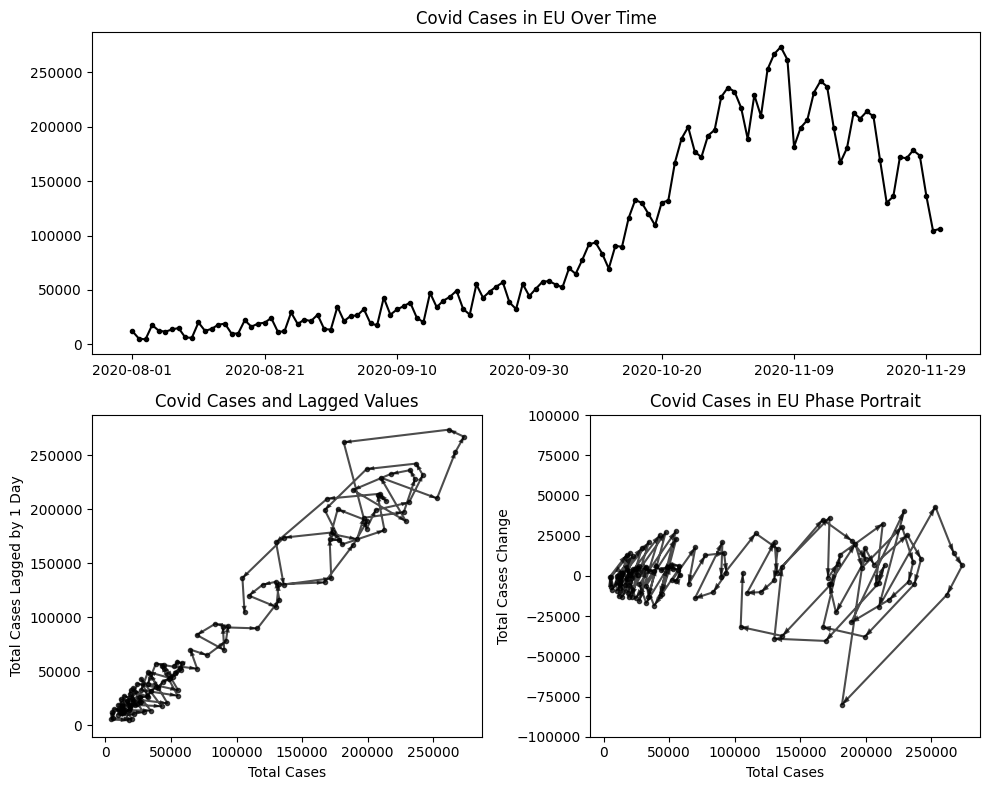
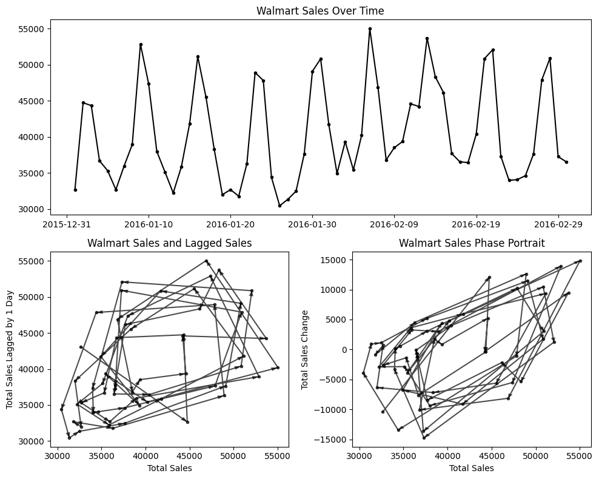
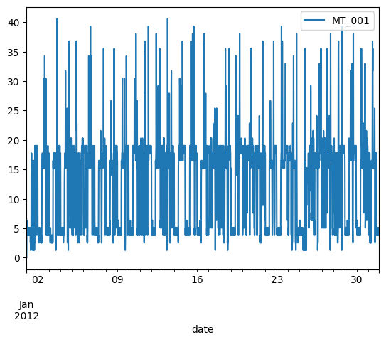

Time Series Data and Embeddings¶
import matplotlib.pyplot as plt
import numpy as np
import pandas as pd
import plotly.express as px
def plot_arrow_chart(
dataframe: pd.DataFrame,
x_col: str,
y_col: str,
ax: plt.Axes,
color: str = "k",
alpha: float = 0.7,
marker: str = ".",
linestyle: str = "-",
arrow_head_width: int = 4000,
) -> plt.Axes:
"""
Plot an arrow chart for the 'Total' and its lagged values
within a specified date range.
"""
x = dataframe[x_col].values
y = dataframe[y_col].values
ax.plot(x, y, marker=marker, linestyle=linestyle, color=color, alpha=alpha)
step = max(1, len(x) // 100)
for i in range(0, len(x) - 1, step):
ax.arrow(
x[i],
y[i],
x[i + 1] - x[i],
y[i + 1] - y[i],
shape="full",
lw=0,
length_includes_head=True,
head_width=arrow_head_width,
color=color,
alpha=alpha,
)
return ax
Pendulum¶
from ts_dl_utils.datasets.pendulum import Pendulum
pen = Pendulum(length=20)
df_pen = pd.DataFrame(pen(3, 100, initial_angle=1, beta=0.01))
df_pen["theta_1"] = df_pen["theta"].shift()
df_pen["theta_diff"] = df_pen["theta"].diff()
df_pen
| t | theta | theta_1 | theta_diff | |
|---|---|---|---|---|
| 0 | 0.000000 | 1.000000 | NaN | NaN |
| 1 | 0.089714 | 0.997132 | 1.000000 | -0.002868 |
| 2 | 0.179428 | 0.990336 | 0.997132 | -0.006796 |
| 3 | 0.269142 | 0.979647 | 0.990336 | -0.010689 |
| 4 | 0.358856 | 0.965114 | 0.979647 | -0.014533 |
| ... | ... | ... | ... | ... |
| 295 | 26.465639 | 0.729907 | 0.714216 | 0.015691 |
| 296 | 26.555353 | 0.742692 | 0.729907 | 0.012785 |
| 297 | 26.645067 | 0.752524 | 0.742692 | 0.009833 |
| 298 | 26.734781 | 0.759371 | 0.752524 | 0.006847 |
| 299 | 26.824495 | 0.763211 | 0.759371 | 0.003840 |
300 rows × 4 columns
fig = plt.figure(figsize=(10, 8), layout="constrained")
spec = fig.add_gridspec(2, 2)
ax0 = fig.add_subplot(spec[0, :])
ax10 = fig.add_subplot(spec[1, 0])
ax11 = fig.add_subplot(spec[1, 1])
ax0.plot(
df_pen.t,
df_pen.theta,
marker=".",
linestyle="-",
color="k",
)
# Make x-ticks readable
ax0.xaxis.set_major_locator(plt.MaxNLocator(8))
# fig.autofmt_xdate(rotation=30)
ax0.set_title("Swing Angle")
ax10 = plot_arrow_chart(
df_pen, x_col="theta", y_col="theta_1", ax=ax10, arrow_head_width=0.00001
)
ax10.set_xlabel("Swing Angle")
ax10.set_ylabel("Swing Angle 0.05 seconds ago")
ax10.set_title("Swing Angle and Angle 0.05 seconds ago")
ax11 = plot_arrow_chart(
df_pen, x_col="theta", y_col="theta_diff", ax=ax11, arrow_head_width=0.00001
)
ax11.set_xlabel("Swing Angle")
ax11.set_ylabel("Swing Angle Change Rate")
ax11.set_title("Phase Portrait")
plt.tight_layout()
/var/folders/gk/cdkvr2rn1yn547mssh0ccq4c0000gp/T/ipykernel_55794/4179391181.py:45: UserWarning:
The figure layout has changed to tight

Covid¶
df_ecdc_covid = pd.read_csv(
"https://gist.githubusercontent.com/emptymalei/"
"90869e811b4aa118a7d28a5944587a64/raw"
"/1534670c8a3859ab3a6ae8e9ead6795248a3e664"
"/ecdc%2520covid%252019%2520data"
)
px.line(df_ecdc_covid, x="datetime", y="Total")
df_ecdc_covid
| datetime | AT | BE | BG | CY | CZ | DE | DK | EE | ES | ... | MT | NL | NO | PL | PT | RO | SE | SI | SK | Total | |
|---|---|---|---|---|---|---|---|---|---|---|---|---|---|---|---|---|---|---|---|---|---|
| 0 | 2020-03-20 | 550.0 | 309.0 | 13.0 | 0.0 | 172.0 | 5940.0 | 36.0 | 9.0 | 3431.0 | ... | 5.0 | 409.0 | 129.0 | 68.0 | 143.0 | 17.0 | 122.0 | 33.0 | 16.0 | 19780.0 |
| 1 | 2020-03-21 | 453.0 | 462.0 | 22.0 | 9.0 | 210.0 | 4185.0 | 104.0 | 16.0 | 2833.0 | ... | 11.0 | 534.0 | 190.0 | 70.0 | 235.0 | 31.0 | 200.0 | 22.0 | 14.0 | 18412.0 |
| 2 | 2020-03-22 | 375.0 | 558.0 | 36.0 | 17.0 | 91.0 | 3140.0 | 71.0 | 23.0 | 4946.0 | ... | 9.0 | 637.0 | 184.0 | 111.0 | 260.0 | 59.0 | 123.0 | 42.0 | 41.0 | 20797.0 |
| 3 | 2020-03-23 | 607.0 | 586.0 | 22.0 | 11.0 | 170.0 | 3311.0 | 69.0 | 20.0 | 3646.0 | ... | 17.0 | 573.0 | 206.0 | 98.0 | 320.0 | 66.0 | 160.0 | 31.0 | 7.0 | 18375.0 |
| 4 | 2020-03-24 | 855.0 | 342.0 | 16.0 | 21.0 | 71.0 | 4438.0 | 65.0 | 26.0 | 4517.0 | ... | 17.0 | 545.0 | 239.0 | 115.0 | 460.0 | 143.0 | 110.0 | 28.0 | 6.0 | 22237.0 |
| ... | ... | ... | ... | ... | ... | ... | ... | ... | ... | ... | ... | ... | ... | ... | ... | ... | ... | ... | ... | ... | ... |
| 265 | 2020-12-10 | 2913.0 | 3071.0 | 3328.0 | 363.0 | 6406.0 | 23679.0 | 2558.0 | 544.0 | 9773.0 | ... | 79.0 | 6524.0 | 459.0 | 12166.0 | 7002.0 | 7365.0 | 7061.0 | 2137.0 | 2564.0 | 158702.0 |
| 266 | 2020-12-11 | 2466.0 | 2754.0 | 3075.0 | 403.0 | 5872.0 | 29875.0 | 3132.0 | 544.0 | 7955.0 | ... | 106.0 | 8709.0 | 362.0 | 13750.0 | 3134.0 | 7067.0 | 7935.0 | 1848.0 | 3125.0 | 172457.0 |
| 267 | 2020-12-12 | 3026.0 | 2762.0 | 3097.0 | 424.0 | 6217.0 | 28438.0 | 3075.0 | 358.0 | 10519.0 | ... | 96.0 | 8827.0 | 498.0 | 13105.0 | 5080.0 | 6460.0 | 7370.0 | 1816.0 | 2166.0 | 172804.0 |
| 268 | 2020-12-13 | 2938.0 | 0.0 | 1287.0 | 324.0 | 3657.0 | 20200.0 | 3552.0 | 757.0 | 0.0 | ... | 121.0 | 9071.0 | 0.0 | 11499.0 | 4413.0 | 6333.0 | 0.0 | 1744.0 | 0.0 | 135594.0 |
| 269 | 2020-12-14 | 3005.0 | 8261.0 | 497.0 | 301.0 | 2000.0 | 16362.0 | 2642.0 | 342.0 | 21309.0 | ... | 153.0 | 9868.0 | 981.0 | 8976.0 | 4044.0 | 4435.0 | 20931.0 | 833.0 | 5897.0 | 170151.0 |
270 rows × 33 columns
df_ecdc_covid_arrow_chart = df_ecdc_covid.loc[
pd.to_datetime(df_ecdc_covid.datetime).between("2020-08-01", "2020-12-01")
].copy()
df_ecdc_covid_arrow_chart["Total_1"] = df_ecdc_covid_arrow_chart["Total"].shift()
df_ecdc_covid_arrow_chart["Total_diff"] = df_ecdc_covid_arrow_chart["Total"].diff()
fig = plt.figure(figsize=(10, 8), layout="constrained")
spec = fig.add_gridspec(2, 2)
ax0 = fig.add_subplot(spec[0, :])
ax10 = fig.add_subplot(spec[1, 0])
ax11 = fig.add_subplot(spec[1, 1])
ax0.plot(
df_ecdc_covid_arrow_chart.datetime,
df_ecdc_covid_arrow_chart.Total,
marker=".",
linestyle="-",
color="k",
)
# Make x-ticks readable
ax0.xaxis.set_major_locator(plt.MaxNLocator(8))
# fig.autofmt_xdate(rotation=30)
ax0.set_title("Covid Cases in EU Over Time")
ax10 = plot_arrow_chart(
df_ecdc_covid_arrow_chart, x_col="Total", y_col="Total_1", ax=ax10
)
ax10.set_xlabel("Total Cases")
ax10.set_ylabel("Total Cases Lagged by 1 Day")
ax10.set_title("Covid Cases and Lagged Values")
ax11 = plot_arrow_chart(
df_ecdc_covid_arrow_chart, x_col="Total", y_col="Total_diff", ax=ax11
)
ax11.set_xlabel("Total Cases")
ax11.set_ylabel("Total Cases Change")
ax11.set_title("Covid Cases in EU Phase Portrait")
ax11.set_ylim(-100_000, 100_000)
plt.tight_layout()
/var/folders/gk/cdkvr2rn1yn547mssh0ccq4c0000gp/T/ipykernel_55794/2305141229.py:44: UserWarning:
The figure layout has changed to tight

Walmart¶
df_walmart = pd.read_csv(
"https://raw.githubusercontent.com/datumorphism/"
"dataset-m5-simplified/refs/heads/main/dataset/"
"m5_store_sales.csv"
)
df_walmart
| date | CA | TX | WI | ('CA', 'CA_1') | ('CA', 'CA_2') | ('CA', 'CA_3') | ('CA', 'CA_4') | ('TX', 'TX_1') | ('TX', 'TX_2') | ('TX', 'TX_3') | ('WI', 'WI_1') | ('WI', 'WI_2') | ('WI', 'WI_3') | |
|---|---|---|---|---|---|---|---|---|---|---|---|---|---|---|
| 0 | 2011-01-29 | 14195 | 9438 | 8998 | 4337 | 3494 | 4739 | 1625 | 2556 | 3852 | 3030 | 2704 | 2256 | 4038 |
| 1 | 2011-01-30 | 13805 | 9630 | 8314 | 4155 | 3046 | 4827 | 1777 | 2687 | 3937 | 3006 | 2194 | 1922 | 4198 |
| 2 | 2011-01-31 | 10108 | 6778 | 6897 | 2816 | 2121 | 3785 | 1386 | 1822 | 2731 | 2225 | 1562 | 2018 | 3317 |
| 3 | 2011-02-01 | 11047 | 7381 | 6984 | 3051 | 2324 | 4232 | 1440 | 2258 | 2954 | 2169 | 1251 | 2522 | 3211 |
| 4 | 2011-02-02 | 9925 | 5912 | 3309 | 2630 | 1942 | 3817 | 1536 | 1694 | 2492 | 1726 | 2 | 1175 | 2132 |
| ... | ... | ... | ... | ... | ... | ... | ... | ... | ... | ... | ... | ... | ... | ... |
| 1908 | 2016-04-20 | 15148 | 9600 | 10595 | 3722 | 3691 | 5235 | 2500 | 2901 | 3384 | 3315 | 3242 | 4194 | 3159 |
| 1909 | 2016-04-21 | 14488 | 9602 | 10943 | 3709 | 3303 | 5018 | 2458 | 2776 | 3446 | 3380 | 3324 | 4393 | 3226 |
| 1910 | 2016-04-22 | 17095 | 10615 | 12807 | 4387 | 4457 | 5623 | 2628 | 3022 | 3902 | 3691 | 3991 | 4988 | 3828 |
| 1911 | 2016-04-23 | 21834 | 12266 | 14862 | 5577 | 5884 | 7419 | 2954 | 3700 | 4483 | 4083 | 4772 | 5404 | 4686 |
| 1912 | 2016-04-24 | 23187 | 12282 | 14326 | 6113 | 6082 | 7721 | 3271 | 4033 | 4292 | 3957 | 4874 | 5127 | 4325 |
1913 rows × 14 columns
px.line(df_walmart, x="date", y="CA")
df_walmart_total = df_walmart[["date", "CA", "TX", "WI"]].copy()
df_walmart_total["total"] = (
df_walmart_total.CA + df_walmart_total.TX + df_walmart_total.WI
)
df_walmart_total["datetime"] = pd.to_datetime(df_walmart_total.date, format="%Y-%m-%d")
df_walmart_total["timestamp"] = df_walmart_total.datetime.astype(int) // 10**9
df_walmart_total["total_1"] = df_walmart_total.total.shift()
df_walmart_total["total_diff"] = df_walmart_total.total.diff()
px.scatter(
df_walmart_total.loc[pd.to_datetime(df_walmart_total.date).dt.year == 2016],
x="total",
y="total_1",
color="timestamp",
)
df_walmart_arrow_chart = df_walmart_total.loc[
pd.to_datetime(df_walmart_total.date).between("2016-01-01", "2016-03-01")
].copy()
fig = plt.figure(figsize=(10, 8), layout="constrained")
spec = fig.add_gridspec(2, 2)
ax0 = fig.add_subplot(spec[0, :])
ax10 = fig.add_subplot(spec[1, 0])
ax11 = fig.add_subplot(spec[1, 1])
ax0.plot(
df_walmart_arrow_chart.datetime,
df_walmart_arrow_chart.total,
marker=".",
linestyle="-",
color="k",
)
# Make x-ticks readable
ax0.xaxis.set_major_locator(plt.MaxNLocator(8))
# fig.autofmt_xdate(rotation=30)
ax0.set_title("Walmart Sales Over Time")
ax10 = plot_arrow_chart(
df_walmart_arrow_chart,
x_col="total",
y_col="total_1",
ax=ax10,
arrow_head_width=500,
)
ax10.set_xlabel("Total Sales")
ax10.set_ylabel("Total Sales Lagged by 1 Day")
ax10.set_title("Walmart Sales and Lagged Sales")
ax11 = plot_arrow_chart(
df_walmart_arrow_chart,
x_col="total",
y_col="total_diff",
ax=ax11,
arrow_head_width=500,
)
ax11.set_xlabel("Total Sales")
ax11.set_ylabel("Total Sales Change")
ax11.set_title("Walmart Sales Phase Portrait")
plt.tight_layout()
/var/folders/gk/cdkvr2rn1yn547mssh0ccq4c0000gp/T/ipykernel_55794/2550651657.py:43: UserWarning:
The figure layout has changed to tight

Electricity Data¶
import io
import zipfile
import pandas as pd
import requests
# Download from remote URL
data_uri = "https://archive.ics.uci.edu/ml/machine-learning-databases/00321/LD2011_2014.txt.zip"
r = requests.get(data_uri)
z = zipfile.ZipFile(io.BytesIO(r.content))
z.extractall("tmp/data/uci_electricity/")
# Load as pandas dataframe
df_electricity = (
pd.read_csv("tmp/data/uci_electricity/LD2011_2014.txt", delimiter=";", decimal=",")
.rename(columns={"Unnamed: 0": "date"})
.set_index("date")
)
df_electricity.index = pd.to_datetime(df_electricity.index)
df_electricity
| MT_001 | MT_002 | MT_003 | MT_004 | MT_005 | MT_006 | MT_007 | MT_008 | MT_009 | MT_010 | ... | MT_361 | MT_362 | MT_363 | MT_364 | MT_365 | MT_366 | MT_367 | MT_368 | MT_369 | MT_370 | |
|---|---|---|---|---|---|---|---|---|---|---|---|---|---|---|---|---|---|---|---|---|---|
| date | |||||||||||||||||||||
| 2011-01-01 00:15:00 | 0.000000 | 0.000000 | 0.000000 | 0.000000 | 0.000000 | 0.000000 | 0.000000 | 0.000000 | 0.000000 | 0.000000 | ... | 0.000000 | 0.0 | 0.000000 | 0.000000 | 0.000000 | 0.000000 | 0.000000 | 0.000000 | 0.000000 | 0.000000 |
| 2011-01-01 00:30:00 | 0.000000 | 0.000000 | 0.000000 | 0.000000 | 0.000000 | 0.000000 | 0.000000 | 0.000000 | 0.000000 | 0.000000 | ... | 0.000000 | 0.0 | 0.000000 | 0.000000 | 0.000000 | 0.000000 | 0.000000 | 0.000000 | 0.000000 | 0.000000 |
| 2011-01-01 00:45:00 | 0.000000 | 0.000000 | 0.000000 | 0.000000 | 0.000000 | 0.000000 | 0.000000 | 0.000000 | 0.000000 | 0.000000 | ... | 0.000000 | 0.0 | 0.000000 | 0.000000 | 0.000000 | 0.000000 | 0.000000 | 0.000000 | 0.000000 | 0.000000 |
| 2011-01-01 01:00:00 | 0.000000 | 0.000000 | 0.000000 | 0.000000 | 0.000000 | 0.000000 | 0.000000 | 0.000000 | 0.000000 | 0.000000 | ... | 0.000000 | 0.0 | 0.000000 | 0.000000 | 0.000000 | 0.000000 | 0.000000 | 0.000000 | 0.000000 | 0.000000 |
| 2011-01-01 01:15:00 | 0.000000 | 0.000000 | 0.000000 | 0.000000 | 0.000000 | 0.000000 | 0.000000 | 0.000000 | 0.000000 | 0.000000 | ... | 0.000000 | 0.0 | 0.000000 | 0.000000 | 0.000000 | 0.000000 | 0.000000 | 0.000000 | 0.000000 | 0.000000 |
| ... | ... | ... | ... | ... | ... | ... | ... | ... | ... | ... | ... | ... | ... | ... | ... | ... | ... | ... | ... | ... | ... |
| 2014-12-31 23:00:00 | 2.538071 | 22.048364 | 1.737619 | 150.406504 | 85.365854 | 303.571429 | 11.305822 | 282.828283 | 68.181818 | 72.043011 | ... | 276.945039 | 28200.0 | 1616.033755 | 1363.636364 | 29.986962 | 5.851375 | 697.102722 | 176.961603 | 651.026393 | 7621.621622 |
| 2014-12-31 23:15:00 | 2.538071 | 21.337127 | 1.737619 | 166.666667 | 81.707317 | 324.404762 | 11.305822 | 252.525253 | 64.685315 | 72.043011 | ... | 279.800143 | 28300.0 | 1569.620253 | 1340.909091 | 29.986962 | 9.947338 | 671.641791 | 168.614357 | 669.354839 | 6702.702703 |
| 2014-12-31 23:30:00 | 2.538071 | 20.625889 | 1.737619 | 162.601626 | 82.926829 | 318.452381 | 10.175240 | 242.424242 | 61.188811 | 74.193548 | ... | 284.796574 | 27800.0 | 1556.962025 | 1318.181818 | 27.379400 | 9.362200 | 670.763828 | 153.589316 | 670.087977 | 6864.864865 |
| 2014-12-31 23:45:00 | 1.269036 | 21.337127 | 1.737619 | 166.666667 | 85.365854 | 285.714286 | 10.175240 | 225.589226 | 64.685315 | 72.043011 | ... | 246.252677 | 28000.0 | 1443.037975 | 909.090909 | 26.075619 | 4.095963 | 664.618086 | 146.911519 | 646.627566 | 6540.540541 |
| 2015-01-01 00:00:00 | 2.538071 | 19.914651 | 1.737619 | 178.861789 | 84.146341 | 279.761905 | 10.175240 | 249.158249 | 62.937063 | 69.892473 | ... | 188.436831 | 27800.0 | 1409.282700 | 954.545455 | 27.379400 | 4.095963 | 628.621598 | 131.886477 | 673.020528 | 7135.135135 |
140256 rows × 370 columns
df_electricity.loc[
(df_electricity.index >= "2012-01-01") & (df_electricity.index < "2012-02-01")
][["MT_001"]].plot()
<Axes: xlabel='date'>
